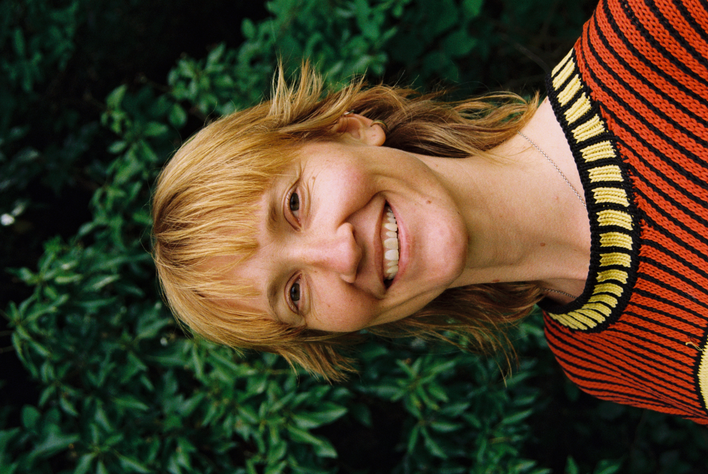
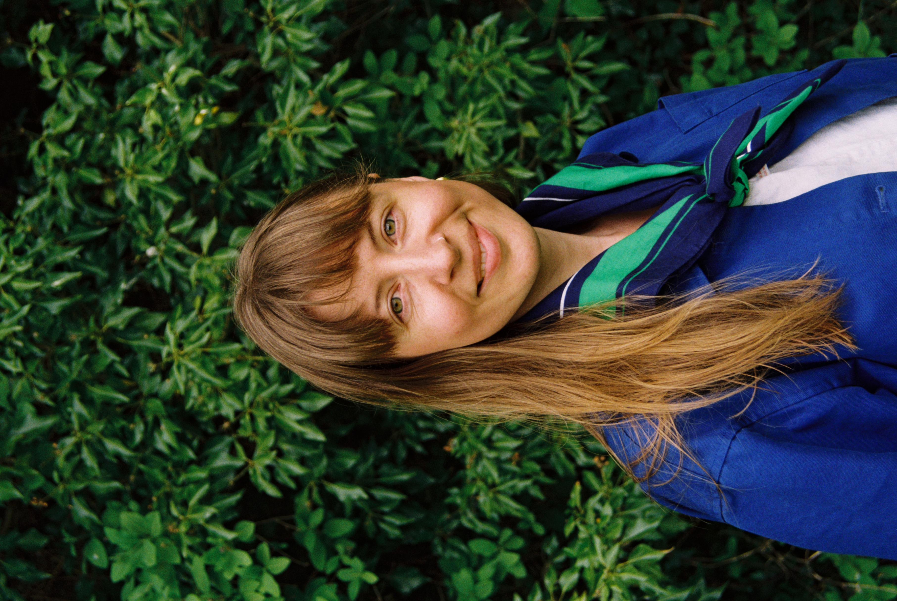
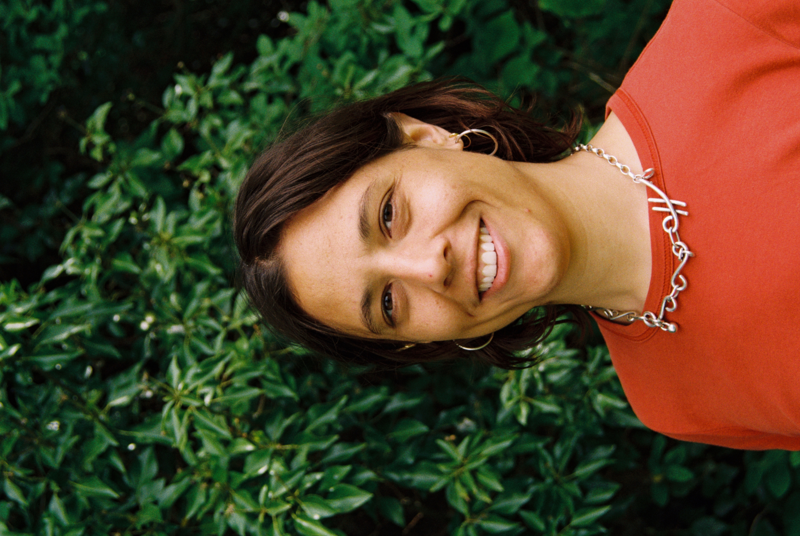
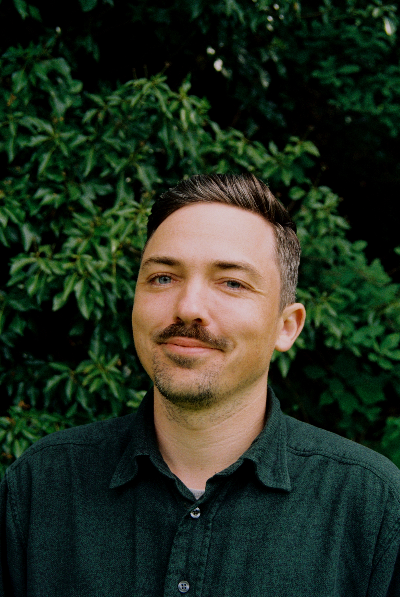
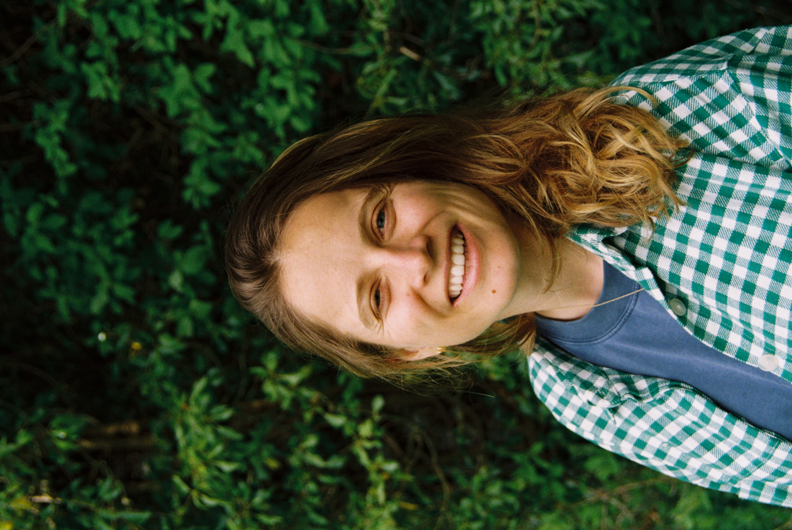
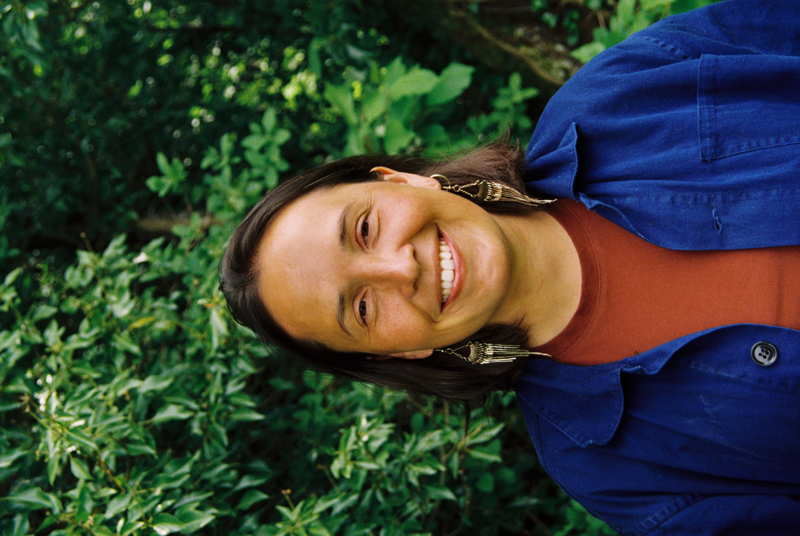
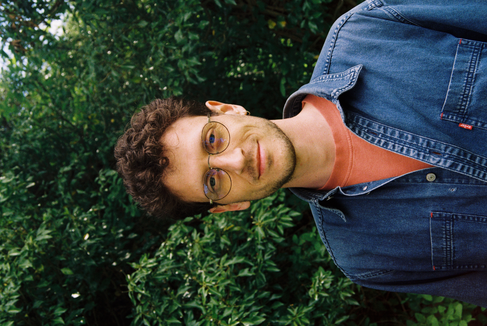

Om oss
Foreningen Robust jobber for at økonomien skal tjene samfunn og natur, og ikke motsatt. Vi mener at en sunn økonomi fungerer uten å bryte ned og utarme naturen, og at det overordnede, globale målet er å fordele ressurser likt slik at alle mennesker har tilgang til et godt liv. For å oppnå dette, arbeider foreningen med aktiviteter og prosjekter som bygger på mangfoldige perspektiver og praksiser: Mangfold er en nødvendighet for et robust økonomisk system.
Vi jobber tverrfaglig og henter kunnskap fra ulike økonomiske teorier, fra historie, psykologi, filosofi og designtenkning. Vi står for et pluralistisk perspektiv, altså at det ikke finnes én sannhet eller et svar. Vi tror heller at mangfoldige meninger og perspektiver styrker vår felles forståelse av verden, de utfordringene vi står overfor, og at det er den mest rettferdige måten å finne løsninger på.
I Robust mener vi at det er det strukturelle i samfunnet som må forandres, og ikke bare symptomene på den økologiske og sosiale krisen vi står i. Vi streber etter å finne løsninger på disse utfordringene basert på en helhetlig og systemorientert forståelse av samfunnet. Dette innebærer langsiktige visjoner, radikal forestilling om hvilke alternativer som er mulige, og samarbeider med eksterne aktører for å iverksette tiltak eller gjennomføre prosjekter.
Robust består av syv styremedlem med bakgrunn innen økonomi, strategisk design, kunst, matematikk og miljøstudier. Foreningen sanker styrke og resiliens i medlemmenes ulike bakgrunner. Videre er flere av medlemmene koblet opp til ulike nettverk som International Degrowth Network, Rethinking Economics Norge, Postgrowth Nordics Network og Vekstfri Norge.
Vi komposterer konvensjonelle, utdaterte metoder om til mer omsorgsfulle og livskraftige tilnærminger. Robust er radikale, ikke i den politiske forstand, men i ordets betydning. Å være radikal betyr at man «går til roten av» (problemet). Med dette følger det også at vi ser etter de transformative løsningene. Fordi som radikale, vet vi at "inkrementalisme" leder til kortsiktige, falske løsninger som opprettholder "status quo" heller enn å transformere.

Anna er miljøøkonom fra NHH på papiret, grasrotøkonom i praksis. Som tidligere leder for Rethinking Economics Norge ble hun nysgjerrig på hva som egentlig skjer «under overflaten» i de dominerende økonomiske fortellingene. Nå bor hun i Maputo, hvor hun søker en dypere relasjon til de mosambikanske mangrovene. I 2026 leverte hun en kunstnerbasert masteroppgave i nedvekst og politisk økologi, My Mycelium Teacher, ved det Autonome Universitetet i Barcelona.

Sigrid har mastergrad i systemorientert- og strategisk design ved Arkitektur- og Designhøgskolen i Oslo. I 2022 leverte hun diplomoppgaven Drømmer om en ny normal hvor hun utviklet en endringskatalog for bærekraftig omstilling av klesbransjen, med nedvekst som grunnpremiss. Hun er en engasjert endringsaktivist, prosjektleder, foredrags- og kursholder. I 2025 var hun med å etablere NØKO, hvor hun er kreativ leder og kommunikasjonsrådgiver. Generelt er Sigrid opptatt av godt designhåndverk og de fysiske opplevelsene av arbeidet vårt i Robust.

Eline jobber for tiden med sin PhD i matematikk ved UiO. Hun har alltid vært opptatt av å forstå og utfordre det økonomiske systemet og har vært aktiv i organisasjoner som Attac og Rethinking Economics Norge. Gjennom sitt engasjement i Latin-Amerikagruppene i Norge har hun fått bredere perspektiver på de globale konsekvensene av maktstrukturer. I Robust er Eline kursholder og er engasjert i å invitere kroppen og følelsene med på det vi gjør.

Thomas har master i internasjonale miljøstudier fra NMBU hvor han også gjesteforeleser i økologisk økonomi og degrowth. Han jobber som fagrådgiver i Alm – Senter for økonomisk politikk. Han har vært leder for Rethinking Economics Norge og har erfaring med bærekraftig finans fra Eika Gruppen. Thomas er engasjert i sivilsamfunnet, liker en god samfunnsdebatt, og er spesielt opptatt av bedre måter å innrette bank- og finanssystemet slik at de fremmer en blomstrende realøkonomi.

Christina er utdannet siviløkonom fra NHH med spesialisering i klima- og miljøøkonomi. Hun har konsulenterfaring fra offentlig og privat sektor og holder en master i nedvekst og økologisk økonomi fra det Autonome Universitetet i Barcelona. Christina jobber til daglig som fagrådgiver i Alm – Senter for økonomisk politikk.


Mattia har bachelor i filosofi fra Bologna, bachelor i informatikk og psykologi, og mastergrad i læringsdesign fra Universitetet i Oslo. Han har erfaring som designer og prosjektleder innen digitale utdanningstjenester. Faglig er han opptatt av politisk økonomi, filosofi, psykologi og design – særlig spørsmål om demokrati, ulikhet, livskvalitet og samfunnsendring. Han er interessert i å forstå utfordringene i dagens politiske og økonomiske systemer, og liker å lære, formidle og omsette kunnskap til praksis.